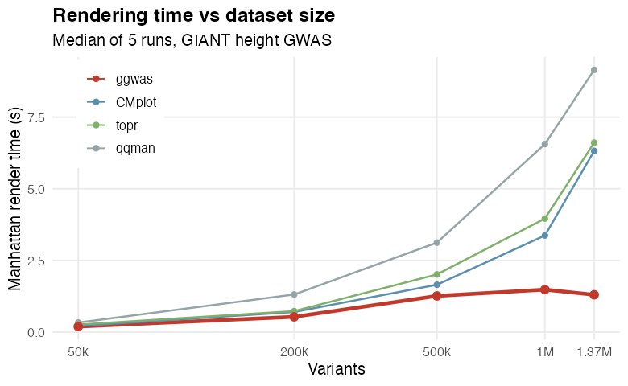

Modern, fast, and fully customizable GWAS visualizations built on ggplot2. Designed for publication-ready figures with sensible defaults and journal-specific themes.
Key features
- Comprehensive plot library including novel visualizations not available elsewhere
- Smart downsampling for 10M+ variant datasets
- Journal themes (Nature, Science, Cell, PLOS) and 14 color palettes
- Gene annotation with automatic nearest-gene mapping
- Auto-detects column names from PLINK, REGENIE, GCTA, GEMMA, and generic files
- Fully composable — every function returns a ggplot object
Comparison
| Feature | qqman | CMplot | ggwas |
|---|---|---|---|
| ggplot2-native | No | No | Yes |
| Manhattan + QQ | Yes | Yes | Yes + CI + lambda + stratified |
| Miami plot | No | No | Yes |
| Locus Zoom | No | No | Yes (with LD + gene track) |
| Circular Manhattan | No | Yes (base R) | Yes (ggplot2, multi-ring) |
| Enrichment Manhattan | No | No | Yes (novel) |
| Multi-trait overlay | No | No | Yes (novel, pleiotropy) |
| Genome-wide heatmap | No | No | Yes (novel) |
| Effect-size volcano | No | No | Yes (novel) |
| Summary dashboard | No | No | Yes (novel) |
| Gene labels on peaks | No | No | Yes |
| Region highlights | No | No | Yes |
| Top hits table | No | No | Yes (with clumping) |
| Journal themes | No | No | 6 themes + 4 presets |
| Color palettes | Limited | Limited | 14 palettes (colorblind-safe) |
| Auto-detect formats | No | No | Yes |
| Smart downsampling | No | No | Yes |
Installation
pak::pak("bczech/ggwas")Quick start
library(ggwas)
# Read any GWAS results file — columns auto-detected
gwas <- read_gwas_table("my_results.txt")
# Manhattan plot
manhattan_plot(gwas)
# Label top hits with gene names
manhattan_genes(gwas, genes = my_gene_table, gene_top_n = 10)
# QQ plot with confidence band and lambda
qq_plot(gwas, show_lambda = TRUE)
# Miami plot — discovery vs replication
miami_plot(discovery, replication,
top_title = "Discovery", bottom_title = "Replication")
# Publication preset
p <- gwas_preset("publication")
manhattan_plot(gwas, colors = p$colors, point_size = p$point_size) + p$themeSupported input formats
| Format | Function |
|---|---|
| Generic (auto-detect) | read_gwas_table() |
| PLINK .assoc/.linear/.logistic |
read_plink_assoc() / _linear() / _logistic()
|
| REGENIE | read_regenie() |
| GCTA MLMA | read_gcta_mlma() |
| GEMMA | read_gemma() |
| Any data.frame | Pass directly with column mapping |
Plot gallery
Core plots
manhattan_plot(gwas, label_top_n = 5)
qq_plot(gwas, show_lambda = TRUE, ci = 0.95)
miami_plot(gwas1, gwas2, top_title = "Study 1", bottom_title = "Study 2")
locus_plot(gwas, lead_snp = "rs12345", flank = 500000)Novel visualizations
pvalue_heatmap(gwas, bin_size = 1e6, palette = "magma")
volcano_plot(gwas, label_top_n = 10, color_by = "chromosome")
circular_manhattan(gwas, colors = gwas_palette("nature"))
circular_manhattan(list(BMI = gwas1, Height = gwas2)) # multi-ring
enrichment_manhattan(gwas, annotations = functional_regions)
multitrait_manhattan(BMI = gwas1, Height = gwas2, highlight_shared = TRUE)
gwas_summary(gwas) # multi-panel dashboardGene annotation
# Label peaks with nearest gene names (instead of rs IDs)
manhattan_genes(gwas, genes = gene_table, arrow = TRUE)
# Extract independent top hits with gene mapping
top_hits(gwas, genes = gene_table, p_threshold = 5e-8)
# Highlight genomic regions
plt <- manhattan_plot(gwas)
highlight_regions(plt, data.frame(chr = 6, start = 25e6, end = 34e6, label = "MHC"))Themes and palettes
# Journal themes
manhattan_plot(gwas) + theme_nature()
manhattan_plot(gwas) + theme_science()
manhattan_plot(gwas) + theme_cell()
manhattan_plot(gwas) + theme_plos()
# Presentation / poster
manhattan_plot(gwas) + theme_presentation()
manhattan_plot(gwas) + theme_poster()
# 14 color palettes
gwas_palettes()
manhattan_plot(gwas, colors = gwas_palette("nature"))Performance
Smart downsampling kicks in automatically for large datasets. It preserves all significant variants and bins the non-significant background — the plot looks identical but renders in seconds instead of minutes:
| Variants | qqman | ggwas | Speedup |
|---|---|---|---|
| 50k | 0.19s | 0.20s | ~1x |
| 200k | 0.78s | 0.42s | 1.9x |
| 500k | 1.81s | 1.03s | 1.8x |
| 1M | 4.24s | 1.73s | 2.5x |
| 2M | 9.00s | 2.28s | 3.9x |

manhattan_plot(large_gwas) # 10M SNPs, auto-downsampled to ~200k pointsDocumentation
Full documentation with worked examples: https://bczech.github.io/ggwas/
Or from R:
vignette("ggwas")